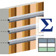

RC躯体から型枠面積を自動算出しExcel・集計表・3Dビューに出力
RC躯体モデルから「型枠が必要な面」と「不要な面（接触面・天端・地中部）」を自動分類し、要素ごとの型枠面積をレベル・部位・タイプ別に集計します。結果はExcelファイル・Revit集計表・色分け3Dビュー・シートに同時出力できます。鉄骨部材・デッキスラブ・LGS壁などは自動判別して除外されます。
| ビュー種別 | 実行 | 備考 |
|---|---|---|
| 3Dビュー | ✅ 推奨 | 「現在のビューに表示されている要素」モードで使用する場合は3Dビューが必須 |
| 平面ビュー・断面ビュー | ⚠️ 可 | 「プロジェクト全体」モードでのみ実行可能 |
| シートビュー | ❌ 不可 | アクティブビューを3Dビューに切り替えてから実行してください |
💡 ポイント：計算対象を絞り込みたい場合は、対象範囲のみが表示された3Dビューを開いた状態で「現在のビューに表示されている要素」を選択してください。セクションボックスで切り取った範囲のみを算出することも可能です。
下記カテゴリに該当するものが算出対象になります。正しいカテゴリでモデリングされているかを確認してください。
| 部位 | Revit カテゴリ |
|---|---|
| 柱 | 構造柱 |
| 梁 | 構造フレーム |
| 壁 | 壁 |
| 床 | 床 |
| 基礎 | 構造基礎 |
| 階段 | 階段 |
| 屋根 | 屋根 |
各要素のベースレベル・上部レベルが正しく設定されていることを確認してください。集計表はレベル順にグループ化されます。
柱と梁、梁と床などが接している部分は Revit の「結合」機能で結合させていなくても自動で接触面を判別します。モデリング時に結合し忘れがあっても、接触している箇所は型枠不要として正しく控除されます。
以下は型枠不要と判定され、集計から自動的に除外されます：
除外要素は解析3Dビュー上でオレンジ色のオブジェクトとして可視化されます（既定では非表示。フィルタ「型枠_除外」をONで確認可能）。
Tools28 リボン → 構造パネル → 「型枠数量算出」 をクリックします。
3Dビューの色分けを「部位別」「工区別」「型枠種別」から選択します。
処理時間：要素数100〜500個で30秒〜2分程度。
完了ダイアログに以下が表示されます。
📷 スクリーンショット画像をここに追加予定
RC躯体モデルから型枠面積を瞬時に算出し、概算見積もりの作成時間を大幅に短縮します。
工区パラメータで分類した集計を出力し、施工計画・進捗管理に活用できます。
色分け3Dビュー＋集計表のシートを自動作成し、提出図書をそのまま出力できます。
対象を絞り込むなら3Dビュー：セクションボックスで対象範囲のみを表示した3Dビューを開き、「現在のビューに表示されている要素」を選択すると処理が高速化されます。
サマリ集計表は動的：「型枠数量集計_合計」表はDirectShapeの追加・削除に動的追従し、要素を削除すると合計が自動再計算されます。
控除面の可視化：オプション「控除面も表示する」をONにすると、接触面・天端面がグレー半透明で表示され、算出ロジックの確認に便利です。
再計算は再実行で：ボタンを再実行すると既存の「型枠分析」ビュー・集計表が上書きされます。視点はその時点でアクティブな3Dビューが引き継がれます。
シートビューでは実行できません。3Dビュー（推奨）または平面・断面ビューに切り替えてから実行してください。
鉄骨柱が除外されない場合は、ファミリの構造材料が「鋼」または「金属」になっているか、ファミリ名・タイプ名に「H-」「BH-」「鉄骨」等のキーワードが含まれているかを確認してください。
RC壁が誤ってLGS壁として除外される場合は、壁構造の各層のマテリアルに「Concrete」または「コンクリート」が含まれているかを確認してください。
処理が遅い場合は計算範囲を「現在のビュー」に絞るか、セクションボックスで対象範囲を限定してください。
A. ファミリの構造材料が「鋼」または「金属」になっているか確認してください。それでも検出されない場合、ファミリ名・タイプ名に「H-」「BH-」「鉄骨」等のキーワードを含めると4層目の名前判定で除外されます。
A. 壁構造の各層のマテリアルに「Concrete」または「コンクリート」が含まれているか確認してください。コンクリート層が認識されれば、石膏ボード仕上げが付いていてもRC壁として算出対象になります。
A. 列幅は実セル内容の最大文字数から自動計算されます。それでも問題がある場合は集計表プロパティで手動調整してください。
A. ボタンを再実行してください。既存の「型枠分析」ビュー・集計表は上書きされます。視点はその時点でアクティブな3Dビューが引き継がれます。
| 症状 | 対処 |
|---|---|
| 「対象要素が見つかりませんでした」 | 計算範囲を「プロジェクト全体」に切り替える、または3Dビューに対象要素を表示させる |
| 鉄骨が除外されない／RCが除外される | デバッグログ C:\temp\Formwork_debug.txt で [SteelDetect] [LgsExclude] 行を確認し、誤判定の根拠を特定 |
| 処理が遅い | 計算範囲を「現在のビュー」に絞る／セクションボックスで対象範囲を限定する |
| エラーで止まる | 完了ダイアログの「エラー・注記」件数を確認し、デバッグログでエラー要素IDを特定 |